Operating Documentation
Direction 5440000, Rev# 5
Signa HDxt Service Methods
Module Version 3.0, Version Date 11/5/10
Operating Documentation |
| Required Persons | Preliminary Reqs | Procedure | Finalization |
|---|---|---|---|
| 2 | Not Applicable | 45 mins | 5 mins |
When the layout of the magnet and rear pedestal do not allow for removal of the Hybrid Splitter by sliding it out from the back of the Rear Pedestal, follow this procedure.
| Item | Qty | Effectivity | Part# | Manufacturer | |
|---|---|---|---|---|---|
| Medium Phillips Screwdriver | 1 | - | - | - | |
| Medium Flat-head Screwdriver | 1 | - | - | - | |
| 17 mm Wrench | 1 | - | - | - | |
| 10 mm Wrench | 1 | - | - | - | |
| Item | Qty | Effectivity | Part# | Manufacturer | |
|---|---|---|---|---|---|
| 3.0T Hybrid Splitter | 1 | - | 2370221 | - | |
| ||||
| shock hazard! | ||||
| high bias voltages are present at the hybrid/combiner during normal signa operation. | ||||
| remove power, lock-out and tag-out (LOTO) the rf cabinet before accessing the hybrid/combiner. |
Select [End Exam] to end any scans.
Move the Low Profile Carriage Assembly (LPCA) to the rear of the magnet
| ||||
| Prior to powering down the entire Systems Cabinet, boot the Applications software down to root level. The VRE System, which resides in the Systems Cabinet, can become corrupted if it loses power when the Applications software is active. | ||||
To boot the Applications software down to the root level, right mouse click and select [Service Tools] and [System Restart].
Once the GUI login displays, remove power according to the instructions in Lock Out / Tag Out RF Systems Cabinet and RF Amplifier .
| NOTE: | Removing power is only to protect the module; there is no direct personal danger. |
Remove DD voltage by turning Off the Driver Module, and switching Off the Systems Cabinet breaker on the PDU.
Remove the covers (shown below) from the rear pedestal.
Illustration 1: Magnet Enclosure Rear View
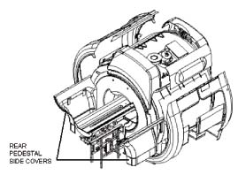
Remove the LPCA cover.
Remove the two screws clamping each belt to the LPCA. (Illustration below is an example, but systems now have two belts.)
Illustration 2: Location of LPCA Belt Connection
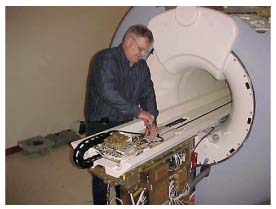
Manually move the LPCA to the front of the magnet.
Using the 17 mm wrench, remove the six bolts (three on each side) connecting the rear pedestal Split Bridge Assembly from the rest of the assembly and magnet enclosure as shown below.
Illustration 3: Removing Bolts Connecting Rear Pedestal
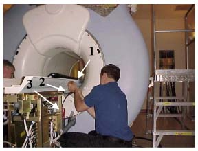
Remove the four screws from each take-up cable connection to clear the Split Bridge Assembly for removal. (Illustration below shows a system with one of these take-up cable connections.)
Illustration 4: Take-Up Cable to Bridge Connection
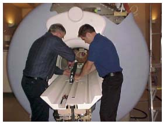
Remove the four screws from rear of the Split Bridge Assembly (shown below) to detach back cover.
Illustration 5: Split Bridge Assembly Back Cover
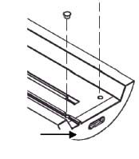
While supporting the flag sensor plate underneath the bridge, remove the two screws from the back of Split Bridge Assembly that connects the bridge to the rear pedestal. (See Illustration 6.)
| NOTE: | Do not allow sensor plate to hang by its cables. Rest it on a portion of the rear pedestal or use another means of support. |
Illustration 6: Rear Bridge Assembly Screws

Pull the LPCA belts out from the rear of the Bridge Assembly.
Slide the Rear Pedestal Assembly back to clear the split bridge assembly for removal.
Remove the rear Split Bridge Assembly by sliding it forward and up toward magnet as shown.
Illustration 7: Removing Rear Split Bridge Assembly
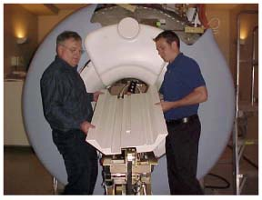
Using the 10 mm wrench, remove the two bolts from the Universal Transient Noise Suppressor (UTNS).
Illustration 8: Removing Bolts from UTNS
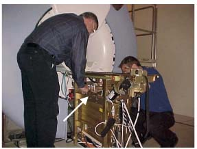
Disconnect the J1 Cable from the UTNS for detachment from the rear pedestal.
Disconnect the J3 Coil No. 1, J4 Coil No. 2, and J6 DD Voltage Cables on the front or magnet side of the Hybrid Splitter as shown.
Illustration 9: Disconnecting Hybrid Splitter Front Cables
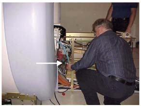
Disconnect the J1-RF, J7-REF No. 1 and J8-REF No. 2 Cables on the rear of the Hybrid Splitter as shown.
Illustration 10: Disconnecting Hybrid Splitter Rear Cables
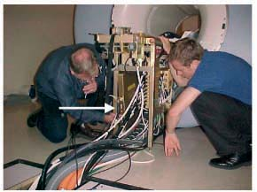
Remove the screws from the top support shown below.
Illustration 11: Location of Top Support
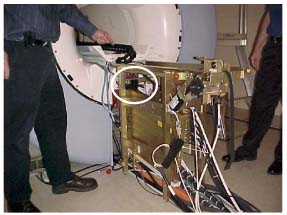
Clear the cables from underneath the Hybrid Splitter.
Remove two screws from the back left leg of the rear pedestal (facing rear of magnet) to disconnect the bottom of the Hybrid Splitter saddle.
Illustration 12: Removing Screws on Rear Pedestal Saddle
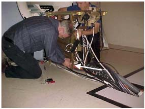
Slide Hybrid Splitter down over the Saddle and away from the magnet to gain further access.
Remove two screws from the top of the Hybrid Splitter saddle.
Illustration 13: Removing Hybrid Splitter Saddle Top Screws
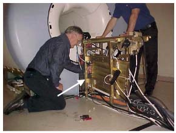
| ||||
| Strong Magnetic Field! | ||||
| The T/R Module has no ferrous material and will not be attracted to the magnet, but eddy currents set up by the strong magnetic field interact with the module making it difficult for one person to handle. | ||||
| Always remove and/or replace the Body Hybrid 3.0T EXCITE Body T/R Module from the rear pedestal with two (2) people keeping the module as far away from the magnet as possible while moving it. |
Remove the Hybrid Splitter saddle. Two people are necessary: One to hold the Hybrid Splitter and one to remove the Saddle.
Illustration 14: Removing Hybrid Splitter Saddle
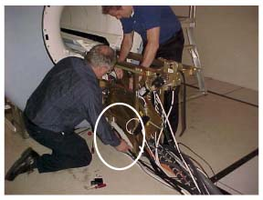
Slide the Hybrid Splitter Saddle down and away from the magnet, and turn the magnet side of the Hybrid Splitter Saddle up to a vertical position.
Illustration 15: Sliding Hybrid Splitter Saddle Out of Magnet
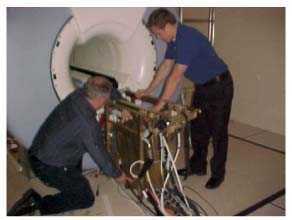
| ||||
| Strong Magnetic Field! | ||||
| The T/R Module has no ferrous material and will not be attracted to the magnet, but eddy currents set up by the strong magnetic field interact with the module making it difficult for one person to handle. | ||||
| Always remove and/or replace the Body Hybrid 3.0T EXCITE Body T/R Module from the rear pedestal with two (2) people keeping the module as far away from the magnet as possible while moving it. |
With two people, pull the Hybrid Splitter up through the rear pedestal, and remove it from the Magnet Room keeping a safe distance from magnet.
Illustration 16: Removing Hybrid Splitter
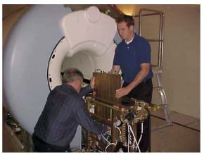
| ||||
| Strong Magnetic Field! | ||||
| The T/R Module has no ferrous material and will not be attracted to the magnet, but eddy currents set up by the strong magnetic field interact with the module making it difficult for one person to handle. | ||||
| Always remove and/or replace the Body Hybrid 3.0T EXCITE Body T/R Module from the rear pedestal with tow (2) people keeping the module as far away from the magnet as possible while moving it. |
With two people, bring the Hybrid Splitter in to Magnet Room keeping a safe distance from magnet.
Turn the Hybrid Splitter magnet side up and lower down through the rear pedestal. (See Illustration 16.)
Turn the Hybrid Splitter down toward the magnet and replace the saddle underneath. (See Illustration 14.)
Replace the screws at the top and bottom of the saddle at the rear pedestal leg. (See Illustration 12 and Illustration 13.)
Set the Hybrid Splitter into the saddle.
Replace the top support and screws. (See Illustration 11.)
Connect the J1-RF in, J7-REF No. 1, and J8-REF No. 2 Cables on the rear of the Hybrid Splitter. (See Illustration 10.)
Connect the J3 Coil No. 1, J4 Coil No. 2, and J6 DD Voltage Cables on the front (magnet side) of the Hybrid Splitter. (See Illustration 9.)
Connect the J1 Cable to the UTNS.
Reattach the UTNS using the 10 mm wrench to replace two bolts. (See Illustration 8.)
Replace the rear Split Bridge Assembly by inserting it down and away from the magnet onto the rear pedestal. (See Illustration 7.)
Slide the rear pedestal assembly back to magnet.
Replace the two screws to the back of Split Bridge Assembly to connect the bridge to rear pedestal. Support the flag sensor plate underneath the bridge while replacing screws, making sure to align the flag correctly. (See Illustration 6.)
Replace the four screws to reattach the rear cover Split Bridge Assembly. (See Illustration 5.)
Replace the two screws on each Take-up Cable connection. (See Illustration 4.)
Using the 17 mm wrench, replace the six bolts (three on each side) connecting the rear pedestal Split Bridge Assembly to the rest of the assembly and the magnet enclosure. (See Illustration 3.)
Restore power to the Driver Module at the rear of the PDU Cabinet.
Move the LPCA to the rear of the magnet.
Replace the belts through the bridge, and clamp them to the LPCA by replacing the two screws on each. (See Illustration 2.)
Replace the LPCA cover.
Replace the rear pedestal covers. (See Illustration 1.)
Restore power to the RF Cabinet and remove LOTO.
Perform a TR Dynamic Diable Calibration.
Complete a Body scan.
Confirm the system is functional.